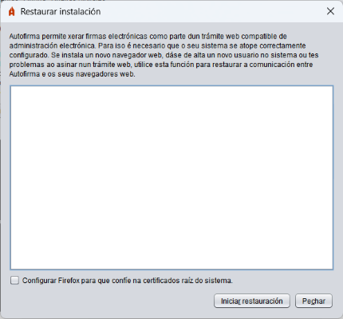

Desde este panel é posible restaurar a instalación de Autofirma para corrixir problemas que afecten á comunicación entre os navegadores web e a aplicación. Os casos máis comúns son: instalouse un novo navegador web despois da instalación de Autofirma, creáronse máis usuarios no equipo ou máis perfís de usuario para un navegador, hase reseteado o perfil dun usuario, etc.

Ao activar esta opción (só dispoñible en Windows e macOS) permítese que o proceso de restauración configure Firefox de tal forma que o navegador confiará nos certificados instalados no almacén de certificados raíz do sistema (Autoridades de confianza). Desta forma Autofirma seguirá funcionando neste navegador aínda que se configuren novos perfís, límpese o perfil ou se se elimina o certificado de confianza do almacén do navegador. Se se deixa esta casa desactivada eliminarase esta configuración no caso de que xa estivese establecida.
Ao pulsar o botón "Iniciar restauración" iniciarase o proceso de restauración.
ADVERTENCIA PARA USUARIOS DE MICROSOFT WINDOWS: Se ao executar o proceso de instalación aparecese unha mensaxe indicando "A execución do código non pode continuar porque non se atopou VCRUNTIME140.dll. Este problema pódese solucionar reinstalando o programa", deberá instalar a contorna de execución redistribuible de Microsoft Visual C++ 2015 e volver executar a operación para poder completar a restauración.